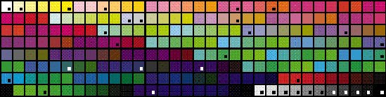
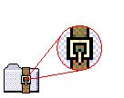
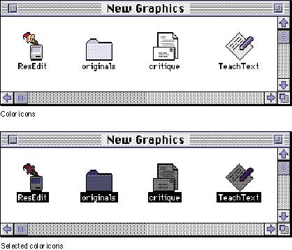
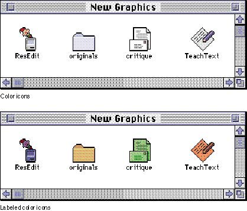

|
Icon ColorsThis section describes the colors and color techniques that you should use when you design your color icons.The Apple Icon Color SetFigure 8-23 shows a palette of the standard 256 colors with a mark on each of the 34 colors used for icon design in system software. If you use ResEdit version 2.1 or later to design and create your icons, the Finder icon family editor provides easy access to these colors. Choose Apple Icon Colors from the Color menu. This command sets the palette in the editor (which is similar to the palette in most graphics applications) to contain the 34 colors used for Finder icons. See ResEdit Reference for information on using ResEdit.Figure 8-23 Standard 256-color palette with icon colors marked  This entire set of 34 colors was chosen to be subtle.
Subdued colors avoid a "circus" effect on the screen. If
you use too many of the same types of colors, people can't
discern what is important as easily. Ramps of color based
on Figure 8-24 An example of dithered color in an icon  The icon colors were chosen for icon design in system
software. It was necessary to limit the number of colors in
the set to create consistency Degradation of the Color Set Across MonitorsIf the default color table colors aren't available, the system software gracefully degrades to black and white. First the operating system tries to match 8-bit colors. If it can't successfully match the colors you specify with those inthe system palette, then it displays the 4-bit icon that you supply. If the operating system can't find or match the 4-bit colors, then it displays the icon in black and white. The system software won't substitute colors that aren't visually close to colors that you assigned. If you choose colors other than the 34 marked in Figure 8-23, use them for detail and not for essential parts of your windows or icons. Selection Mechanism for Color IconsWhen a color icon is selected, the color decreases in brightness. Thismeans that the colors appear darker when selected. On a color monitor, a black-and-white icon turns gray when selected. On a black-and-white monitor, a black-and-white icon uses reverse video to show selection. To make selected items appear distinct from unselected ones, use light colors for large areas. Note that only the 34 colors shown in Figure 8-23 get darkened when a color icon is selected. This means that if you use colors other than those 34 colors in large amounts in an icon, that icon will not get darkened and therefore will not look selected. Figure 8-25 shows a set of control panel icons as they appear on the desktop and the same icons in their selected states. Figure 8-25 Color icons and their selected states  Color Labeling Mechanism for Color IconsThe labeling mechanism tints color icons toward the label color chosen by the user from the Label menu. Figure 8-26 shows some icons and the same icons in their labeled state. To provide system support for this technique, it was necessary to limit the number of colors used in icons. Using the 34 identified icon colors does not guarantee that labeled icons will look good, only that they will actually look labeled. As with icons that are selected, the tinting applies to only the 34 colors. As a result, if you use colors other than the34 colors in your icon, the icon will not look labeled when a label color is applied. Figure 8-26 Color icons and their color-labeled states  |